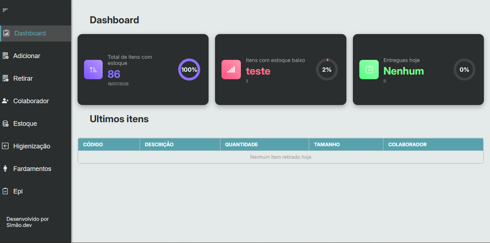
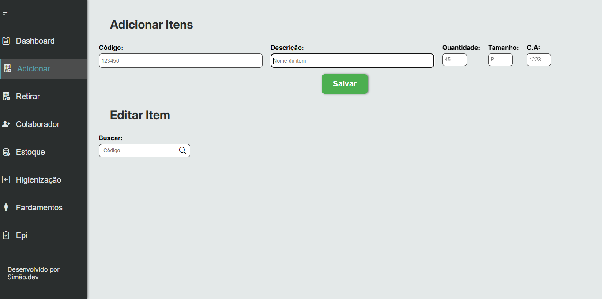
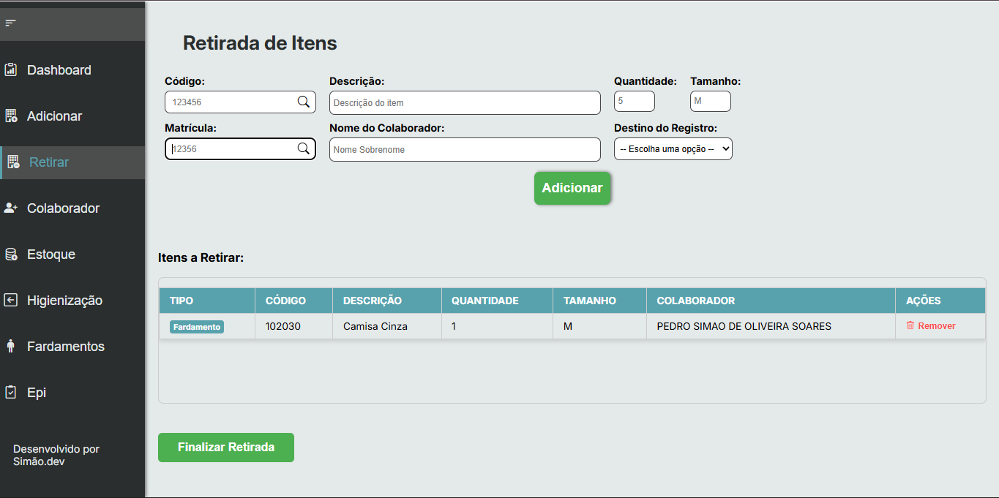
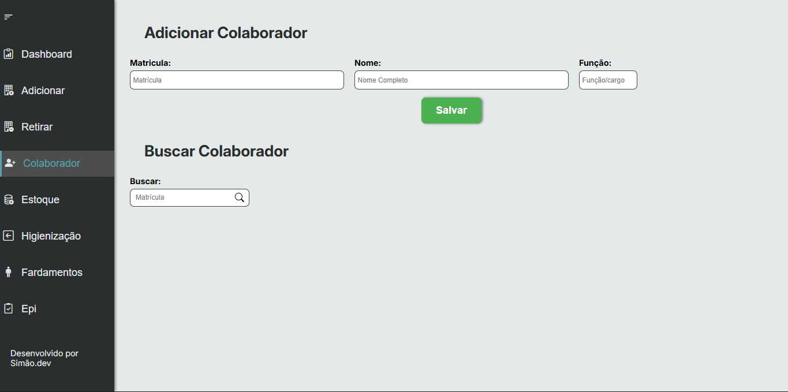
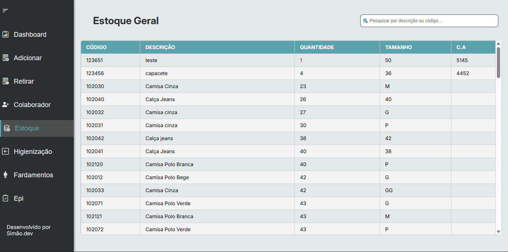
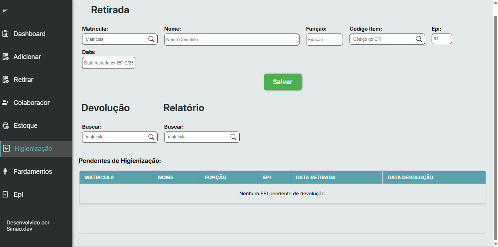

Concluído.
SISTEMA DE CONTROLE DE FARDAMENTOS
Este projeto é um sistema de controle de estoque e movimentação de ativos desenvolvido em Google Apps Script. O objetivo é digitalizar o registro de entradas e saídas, eliminando o uso de papel e agilizando a consulta de informações para colaboradores e gestores.






// 01 VISÃO GERAL
O Gerenciador de Ativos é um sistema web customizado para controle de estoque e movimentação de ferramentas, EPIs (Equipamentos de Proteção Individual) e fardamentos. Desenvolvido para rodar totalmente na nuvem dentro do ecossistema Google, o projeto elimina o uso de formulários em papel, agiliza a consulta de informações para gestores e automatiza o fluxo de entrega e devolução de materiais. O grande diferencial técnico é a arquitetura Serverless utilizando o Google Workspace, transformando o Google Planilhas em um banco de dados relacional e o Google Apps Script em uma potente API de Backend.
// 02 FUNCIONALIDADES
- Dashboard em Tempo Real
- Fluxo Inteligente de Retiradas
- Módulo de Higienização de EPIs:
- Gestão de Colaboradores
- Relatórios Automatizados
DETALHES
FUNÇÃO
Desenvolverdor full-stack
ANO
2024
STATUS
Concluído
TECNOLOGIAS
- JavaScript
- HTML5
- CSS3
- Google apps script